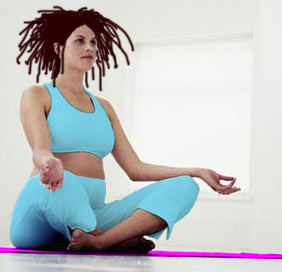

| dunst aftenskole |
| dunst aftenskole finder sted på: Vesterbro Ny Skole, Slesviggade 4 (Bag Enghaveparken) København V aftenskole(a)dunst.dk |
| dunst yoga | Hver onsdag |
 HeisannHvem vil strække på vristene og lytte til sit eget og de andres åndedræt? Det er hver onsdag kl.18.00 på Vesterbrogade 24. Medbring egen måtte og teppe. Det koster 30,- kr. per gang hvis man føler man har råd til det. Ellers er det gratis. Tilmelding hos Sigurd (60 15 08 62) eller Rosa (24 61 17 71) Vi ses. |
|
| Dato | Fag | Tidspunkt: |
| 21. Juni | Foredrag med Lasse Lau
i H.C. Ørstedsparken. Lasse taler om sine kunstprojekter som er homorelaterede. Bla.a. om et projekt hvor han lavede bollebuske i bunkerne i H.C.Ørstedsparken... STED: ved caféen i parken. (Hvis det regner går vi over i LBL's lokaler i Teglgårdstræde 13 som ligger lige over for parken.) TID: kl 22. Gratis. |
22:00 |
| 26. Maj | EDB Time (Gratis) "Let's play" - kom til et oplæg om kvinder og computerspil og vær med til at spille bagefter. m. Emma & Tina |
19:00 |
| 25. Maj | Yoga (Gratis) (tilmelding: Sigurd 27320010) |
18:30 |
| 19. Maj | Lebbe Bio "But i'm a Cheerleader" (Gratis) |
19:00 |
| 18. Maj | Yoga (Gratis) (tilmelding: Sigurd 27320010) |
18:30 |
| 12. Maj | Queer Film (Gratis) |
19:00 |
| 11. Maj | Yoga (Gratis) (tilmelding: Sigurd 27320010) |
18:30 |
| 04. Maj | Yoga (Gratis) (tilmelding: Sigurd 27320010) |
18:30 |
| 28. April | Hjemmekundskab (Pris: 20,- kr.) Lær at lave Mexicansk mad. (tilmelding: Bernado 30232587) |
18:00 |
| 21. April | Queer Film
(Gratis) |
18:00 |
| 27. April | Yoga (Gratis) (tilmelding: Sigurd 27320010) |
18:30 |
| 20. April | Yoga (Gratis) (tilmelding: Sigurd 27320010) |
18:30 |
| 13. April | Yoga (Gratis) (tilmelding: Sigurd 27320010) |
18:30 |
| 6. April | Yoga (Gratis) (tilmelding: Sigurd 27320010) |
18:30 |
| 30. Marts | Yoga (Gratis) (tilmelding: Sigurd 27320010) |
18:30 |
| 23. Marts | Yoga (Gratis) (tilmelding: Sigurd 27320010) |
18:30 |
| 16. Marts | Yoga (Gratis) (tilmelding: Sigurd 27320010) |
18:30 |
| 9. Marts | Yoga (Gratis) (tilmelding: Sigurd 27320010) |
18:30 |
| 2. Marts | Yoga (Gratis) (tilmelding: Sigurd 27320010) |
18:30 |